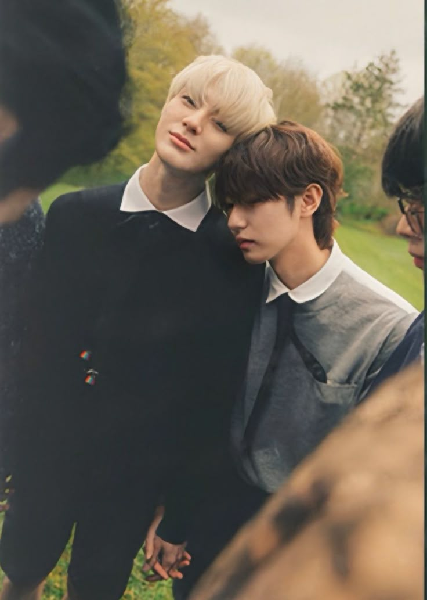
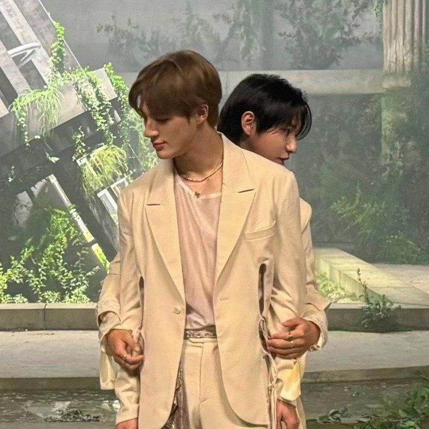

●
A LITTLE ARCHIVE FOR
The Last Frame
Hakim Aryadikara
Some moments are meant to be temporary.
Not because they matter any less,
but because that's what makes them worth remembering.
one little archive from the days we shared